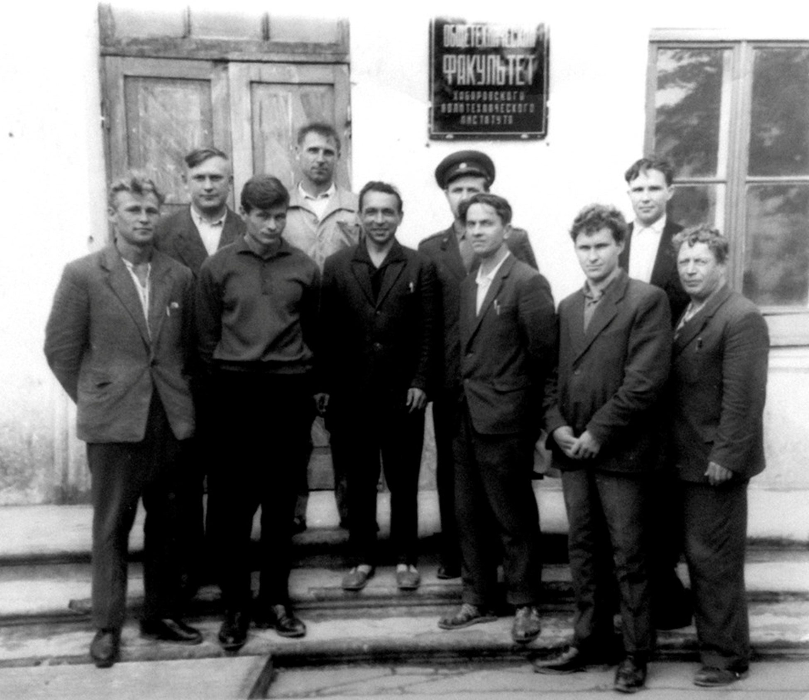
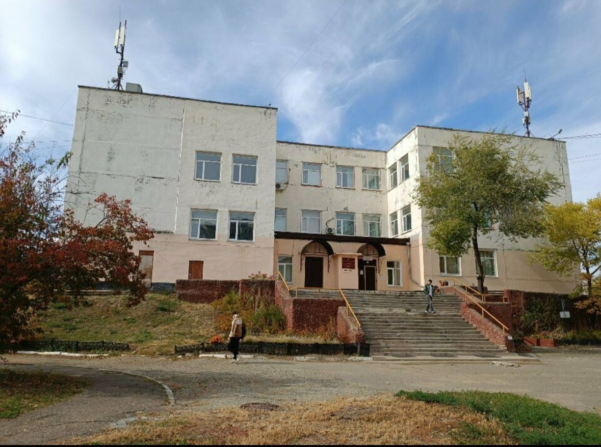

2 августа 1961 год Приказом № 474 Министерства высшего и среднего специального образования РСФСР открыт Благовещенский общетехнический вечерний факультет Хабаровского автомобильно-дорожного института.

20 марта 1975 года Приказом № 119-4 Министерства высшего и среднего специального образования РСФСР на базе общетехнического факультета Хабаровского политехнического института образован Благовещенский технологический институт.
28 января 1983 года Образование кафедры «Экономики и организации производства». День рождения экономического факультета.
1985 год Завершено строительство нового учебно-лабораторного корпуса общей площадью 16,2 тыс. кв. м, построены общежития на 600 мест и столовая на 530 мест 4 декабря 1992 года Приказом № 1116 Министерства наук, высшей школы и технической политики Российской Федерации технологический институт переименован в Благовещенский политехнический институт. 19 октября 1994 года Приказом № 1028 Государственного комитета по высшему образованию Российской Федерации политехнический институт получил статус Амурского государственного университета.

Экономический факультет История экономического факультета начиналась с образования кафедры «Экономики и организации производства», приказ № 7 – ОД от 28.01.1983 г. в Благовещенском технологическом институте.
В 1993 году открыт факультет «Экономики и управления». 21.08.1995 факультет реорганизован и на его базе сформированы факультеты:
«Финансово-экономический», на факультете созданы кафедры: «Архитектуры и строительства», «Экономики и организации бизнеса», «Товароведения и экспертизы товаров».
«Бизнеса и менеджмента», на факультете созданы кафедры: «Маркетинга и предпринимательства», «Экономической кибернетики», «Основы экономической теории», «Бухгалтерский учёт и аудит», «Финансы и анализ хозяйственной деятельности», «Мировая экономика».
В 1995 году кафедра «Экономики и организации производства» осуществила первый выпуск 20 человек по специальности «Экономика и управление на предприятии (в машиностроении)».
Факультеты «Финансово-экономический» и «Бизнеса и менеджмента» были объединены 10.03.2000 г. и создан экономический факультет.
В разные годы экономический факультет возглавляли Сажинов А.А., Немченко Г.И., Чечета Г.Ф., Бабкина Н.А. В настоящее время деканом экономического факультета является Колесникова Ольга Сергеевна.
С 2010 г. факультет начинает подготовку студентов по программам бакалавриата, с 2015 г. - по программам магистратуры.
Факультетом с 2012 г. организуется и проводится Международный молодежный экономический форум «Россия и Китай: вектор развития».
С 2017 по 2021 г. экономический факультет занимал первое место в смотре конкурсе по внеучебной работе среди всех факультетов университета.
С 2021 г. на факультете ведется подготовка иностранных студентов по программам магистратуры.
Образовательный процесс реализуется через сетевое взаимодействие с профильными для факультета университетами страны. К проведению занятий привлечены руководители федеральных органов исполнительной власти, высококвалифицированные специалисты предприятий и организаций региона. На факультете функционирует бизнес-инкубатор, на базе которые студенты общаются с ведущими предпринимателями страны и реализуют собственные бизнес-идеи.